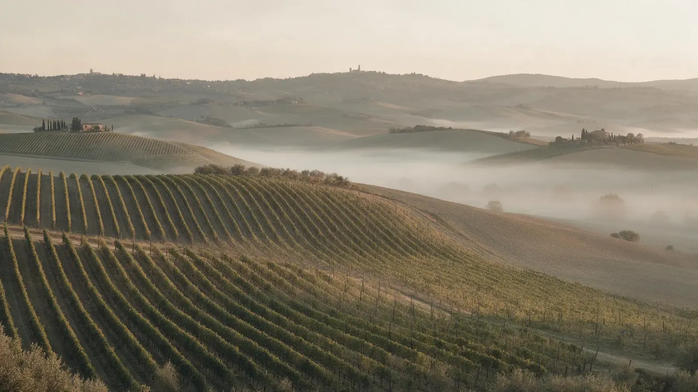
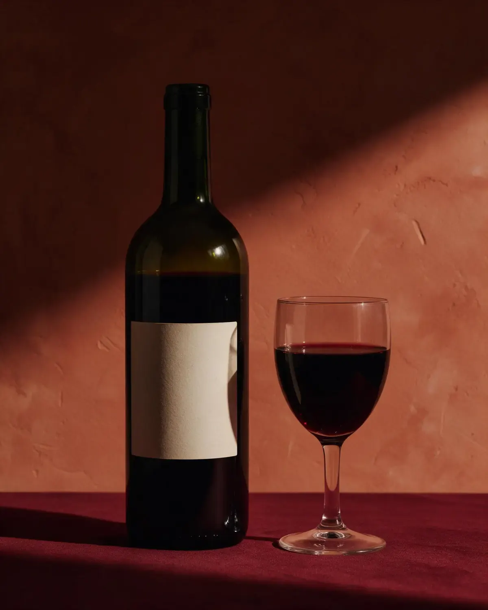
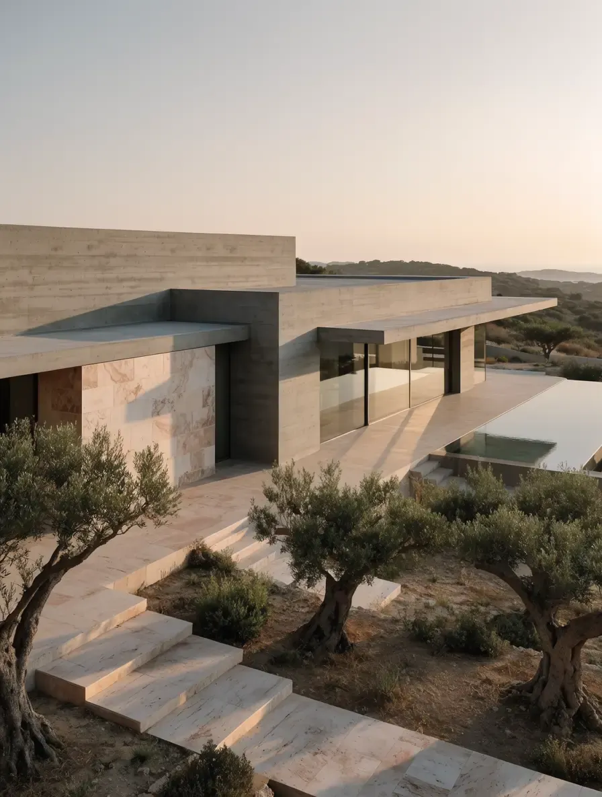
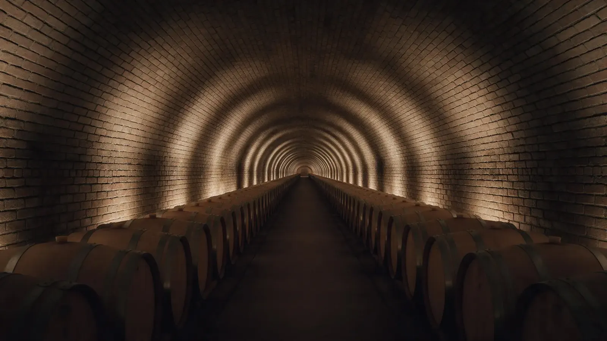
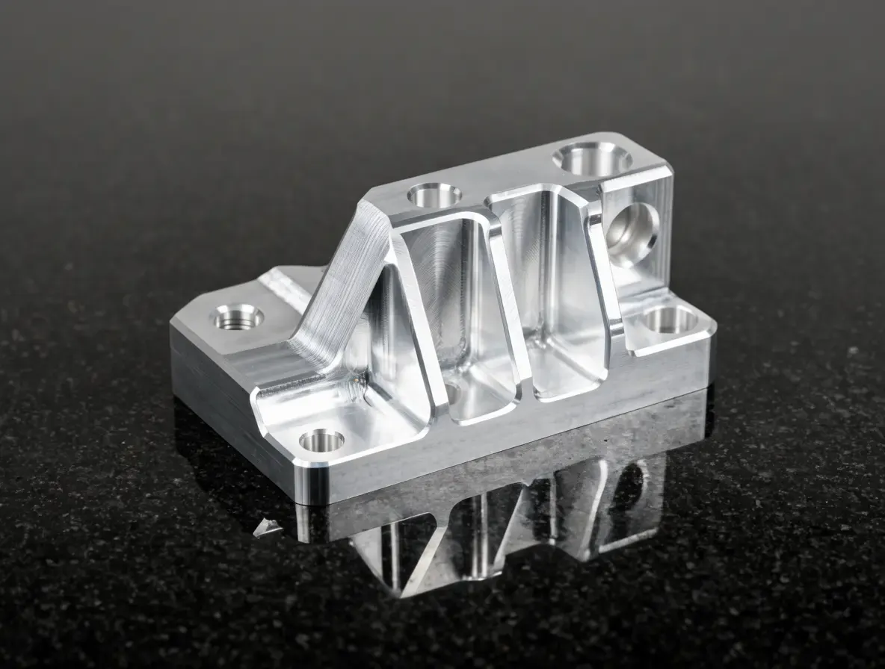
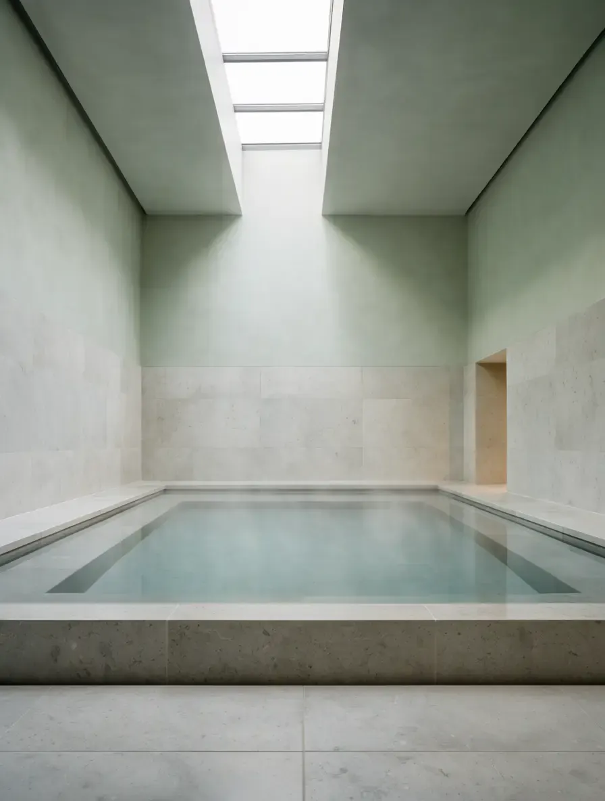
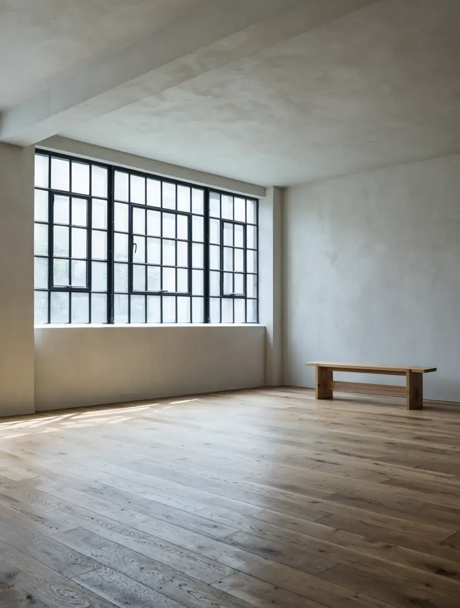
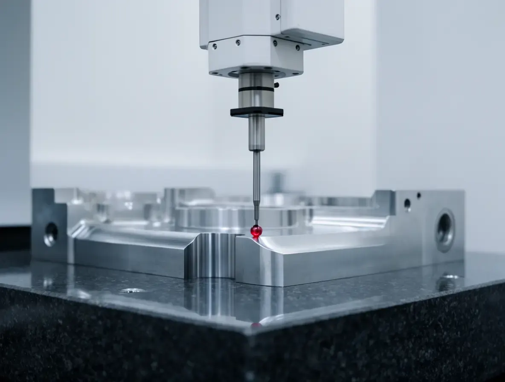
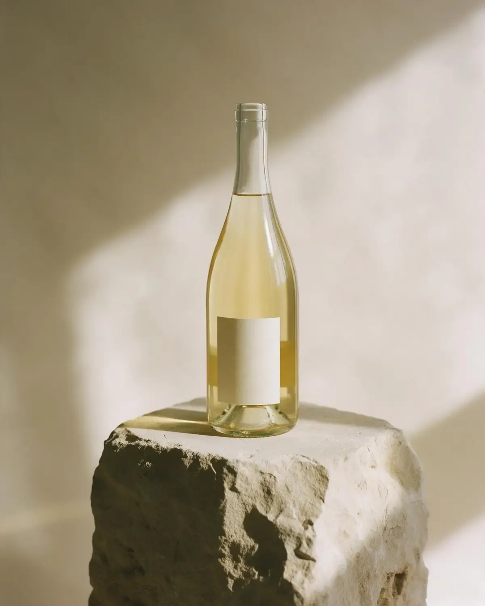

Studio di design digitale per marchi che hanno una storia lunga e un sito che non la racconta ancora.
Disegnodigitalesartoriale
Identità, siti e prodotti digitali per cantine, studi e manifatture. Pochi progetti all'anno, seguiti dalla prima bozza all'ultimo pixel.
Lo studioLavori

Progetti in evidenza
Tre lavori recenti, scelti perché raccontano bene il nostro metodo: capire il mestiere del cliente prima di disegnare.




Lavori in movimento
Showreel
Le immagini scorrono con la pagina: fermati e guardale una a una.



Dal diario
Notedallo studio
Cosa impariamo progetto dopo progetto, scritto quando abbiamo qualcosa da dire.